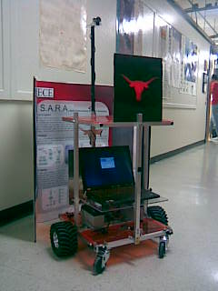
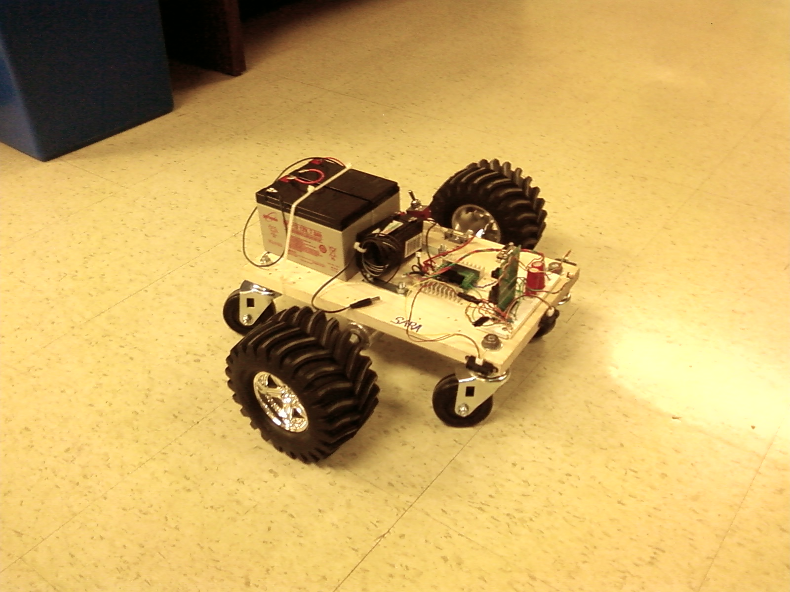
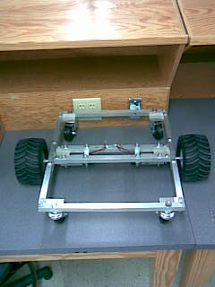
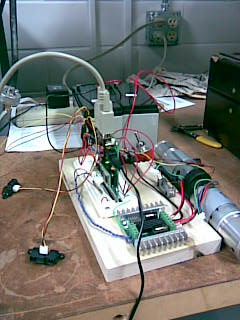

Robert Pound
Research Assistant
As part of the Graduates Linked with Undergraduates in Engineering program at the University of Texas I was able to get a hands on experience in the electronic device fabrication. Using an atomic layer deposition tool I created capacitors from different materials helping my graduate mentor further test different theories in device manufacturing.
While I did not ultimately venture into the device manufacturing arena, I did gain an understanding of why there is a need for high-K dialectrics and how components are created and tested.
Senior Design Project
WHAT IS S.A.R.A.?
The Semi Autonomous Robotic Assistant (SARA) is a robotic assistant proof of concept prototype specifically created to work in a library setting. SARA was designed and created during the spring 2009 semester at the University of Texas at Austin as a senior design project. The main concept is a robot that tracks and follows a user in a library while assisting the user in carrying books. This prototype was designed to carry up to 20 pounds of books while maintaining contact with the user. To control the robot, the user simply uses a remote that either switches the robot from automatic to manual mode. In manual mode, the user controls the robot via push button commands to navigate to the desired location. In automatic mode. the robot will follow the user with its vision tracking system while avoiding obstacles. During operation, a remote computer monitors SARA’s status and outputs speed data to the GUI .

HARDWARE
The only pre-assembled component that was purchased for the robot was the H-bridge controller which allowed the 9S12 to send commands to the DC motors. All hardware components were assembled and configured by the group.

 
SOFTWARE
The main robot controller is the 9S12C32 that is used in the embedded systems courses here at the University of Texas. Because of our group’s familiarity with this device along with the many code examples provided by Dr. Valvano, this portion of the project was fairly straightforward. The microcontroller communicates with the onboard laptop that acts as the main driver of the robot. We used OpenCV, which is a library of functions pertaining to real-time robot vision, to implement SARA’s object tracking system. The software uses image size, color, and position to actively follow a selected target. The underlying theme behind our algorithm is to move the robot in order for the selected object to remain in the center of the viewing window. This method is better explained below in the algorithm flowchart.
FUTURE USE
Our system could easily facilitate the addition of several robotic assistants with the aid of our remote monitoring station. We have a system in place to track robot and user in a given environment, which could be implemented for multiple robots both for tracking purposes as well as a remote command terminal. When the robots are not assisting clients they could be sent on various tasks depending on the features added to the base (such as a scanner, robotic arm, or coffee machine).
SPECIFICATIONS
Dimensions: 18”X18”X33”
Weight: 30lb
Carrying capacity: 20lb
Running time: 2hrs
MOTORS
24 Volt DC
Power Consumption: 24.7W
Gearing Ratio: 24:1
Rated Speed: 252 rpm
Max Torque: 10 kg-cm
Max Current: 2.3 A
BATTERIES: 12 V, 7.0 A-h lead acid
TEAM MEMBERS: Robert Pound, Howard Bishop, Logan Rogers, Sean Horton, Dennis Yao